load("./strokeStudy.RData")library(ggplot2)
library(dplyr)
Attaching package: 'dplyr'The following objects are masked from 'package:stats':
filter, lagThe following objects are masked from 'package:base':
intersect, setdiff, setequal, unionlibrary(nlme)
Attaching package: 'nlme'The following object is masked from 'package:dplyr':
collapselibrary(broom)
library(knitr)
library(stringr)
library(tidyverse)── Attaching core tidyverse packages ──────────────────────── tidyverse 2.0.0 ──
✔ forcats 1.0.0 ✔ readr 2.1.5
✔ lubridate 1.9.4 ✔ tibble 3.3.0
✔ purrr 1.1.0 ✔ tidyr 1.3.1── Conflicts ────────────────────────────────────────── tidyverse_conflicts() ──
✖ nlme::collapse() masks dplyr::collapse()
✖ dplyr::filter() masks stats::filter()
✖ dplyr::lag() masks stats::lag()
ℹ Use the conflicted package (<http://conflicted.r-lib.org/>) to force all conflicts to become errorslibrary(janitor)
Attaching package: 'janitor'
The following objects are masked from 'package:stats':
chisq.test, fisher.testlibrary(naniar)
library(mice)
Attaching package: 'mice'
The following object is masked from 'package:stats':
filter
The following objects are masked from 'package:base':
cbind, rbindEDA
time_stage_levels <- c("baseline", "mid", "final")
x <- x %>%
clean_names() %>%
rename(emsvscar = em_svs_car) %>%
mutate(
race2 = na_if(race2, "Missing"),
race2 = factor(race2),
site_id = factor(site_id),
home_num = as.integer(home_or_rehab),
notify_num = case_when(
pre_hosp_notify == "Yes" ~ 1,
pre_hosp_notify == "No" ~ 0,
TRUE ~ NA_real_
),
transport_num = case_when(
emsvscar == 1 ~ 1,
emsvscar == 0 ~ 0,
TRUE ~ NA_real_
),
gender_num = if_else(gender == "Female", 1, 0),
time_stage = case_when(
time2 %in% c("Y1Q1", "Y1Q2") ~ "baseline",
time2 %in% c("Y1Q3", "Y1Q4", "Y2Q1", "Y2Q2") ~ "mid",
time2 %in% c("Y2Q3", "Y2Q4") ~ "final",
TRUE ~ NA_character_
),
time_stage = factor(time_stage, levels = time_stage_levels)
)
str(x)'data.frame': 1752 obs. of 17 variables:
$ site_id : Factor w/ 9 levels "100","110","120",..: 2 1 1 1 1 1 2 2 2 1 ...
$ time2 : Factor w/ 8 levels "Y1Q1","Y1Q2",..: 1 1 1 1 1 1 1 1 1 1 ...
$ age : int 79 70 91 45 43 47 57 52 80 34 ...
$ gender : Factor w/ 2 levels "Male","Female": 2 1 1 2 2 2 1 1 1 1 ...
$ race2 : Factor w/ 3 levels "Caucasian","African American",..: 1 2 1 2 3 1 1 1 3 2 ...
$ emsvscar : num 1 1 1 0 0 1 0 0 1 1 ...
$ pre_hosp_notify : Factor w/ 2 levels "Yes","No": 1 1 1 2 2 1 2 2 1 1 ...
$ had_thrombectomy: logi TRUE FALSE FALSE FALSE TRUE TRUE ...
$ had_tpa : logi FALSE TRUE TRUE TRUE FALSE FALSE ...
$ tpa_complic : logi FALSE FALSE FALSE FALSE FALSE FALSE ...
$ thr_complic : logi FALSE FALSE FALSE FALSE FALSE FALSE ...
$ home_or_rehab : logi TRUE TRUE TRUE TRUE FALSE TRUE ...
$ home_num : int 1 1 1 1 0 1 1 1 1 1 ...
$ notify_num : num 1 1 1 0 0 1 0 0 1 1 ...
$ transport_num : num 1 1 1 0 0 1 0 0 1 1 ...
$ gender_num : num 1 0 0 1 1 1 0 0 0 0 ...
$ time_stage : Factor w/ 3 levels "baseline","mid",..: 1 1 1 1 1 1 1 1 1 1 ...missingness per variable
na_table <- x %>%
summarise(across(everything(), ~ sum(is.na(.)))) %>%
pivot_longer(everything(),
names_to = "variable",
values_to = "n_missing") %>%
arrange(desc(n_missing))missingness aggregated by site
x %>%
group_by(site_id) %>%
summarise(across(everything(), ~ mean(is.na(.)))) %>%
pivot_longer(-site_id, names_to = "variable", values_to = "prop_missing") %>%
ggplot(aes(x = variable, y = site_id, fill = prop_missing)) +
geom_tile() +
scale_fill_viridis_c() +
theme(axis.text.x = element_text(angle = 45, hjust = 1)) +
labs(title = "Missingness by Site")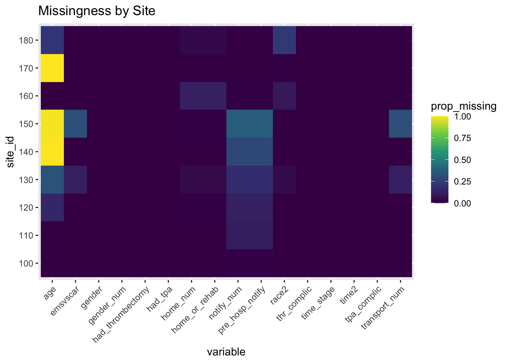
x %>%
ggplot(aes(x = home_or_rehab, y = age, fill = home_or_rehab)) +
geom_boxplot() +
labs(title = "Age Differences by Outcome")Warning: Removed 802 rows containing non-finite outside the scale range
(`stat_boxplot()`).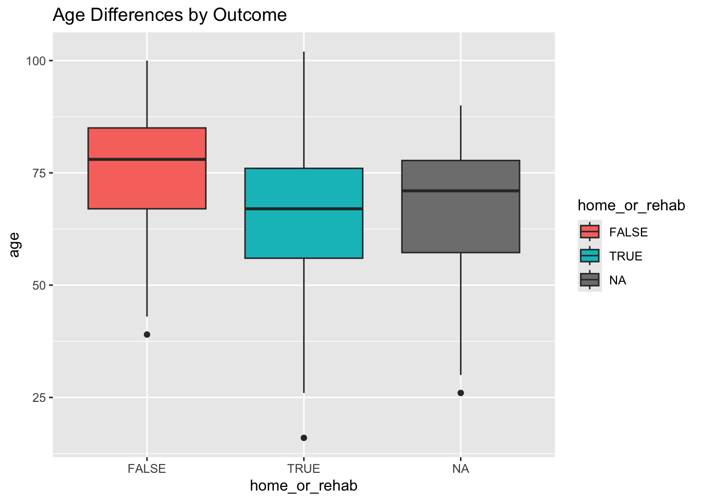
x %>%
ggplot(aes(x = gender, fill = home_or_rehab)) +
geom_bar(position = "fill") +
labs(y = "Proportion",
title = "Outcome by Gender")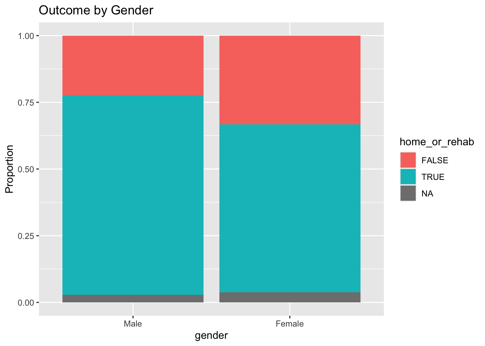
x %>%
ggplot(aes(x = race2, fill = home_or_rehab)) +
geom_bar(position = "fill") +
theme(axis.text.x = element_text(angle = 45, hjust = 1)) +
labs(y = "Proportion",
title = "Outcome by Race")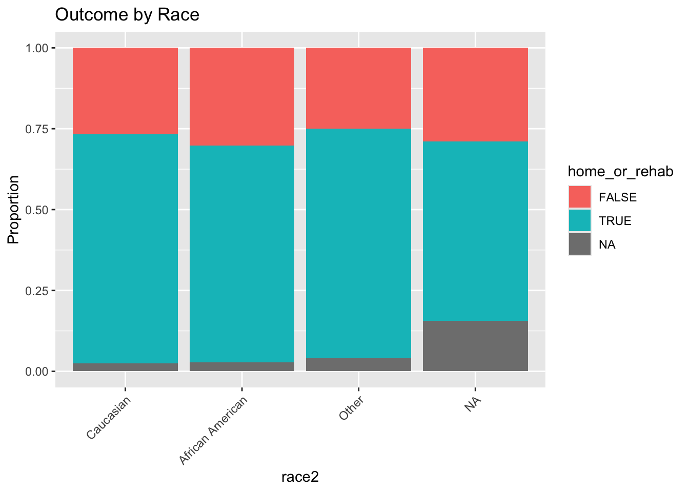
x <- x %>%
mutate(ems_label = case_when(
emsvscar == 1 ~ "EMS Arrival",
emsvscar == 0 ~ "Car Arrival",
TRUE ~ "Missing"
))
x %>%
ggplot(aes(x = ems_label, fill = home_or_rehab)) +
geom_bar(position = "dodge") +
labs(title = "Outcome by Arrival Method",
x = "Arrival Method",
y = "Count",
fill = "Good Outcome") +
scale_fill_manual(values = c("FALSE" = "tomato", "TRUE" = "steelblue"))
missingness by quarter
x %>%
group_by(time2) %>%
summarise(across(everything(), ~ mean(is.na(.)))) %>%
pivot_longer(-time2, names_to = "variable", values_to = "prop_missing") %>%
ggplot(aes(variable, time2, fill = prop_missing)) +
geom_tile() +
scale_fill_viridis_c() +
theme(axis.text.x = element_text(angle = 45, hjust = 1)) +
labs(title = "Missingness by Quarter")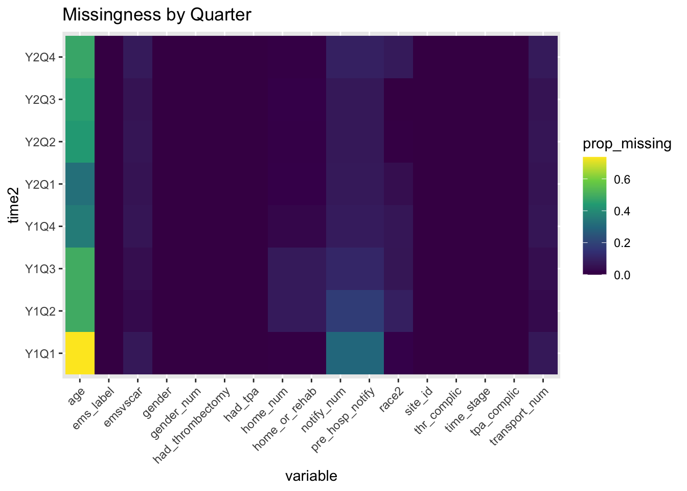
missingness correlation plot
vis_miss(x)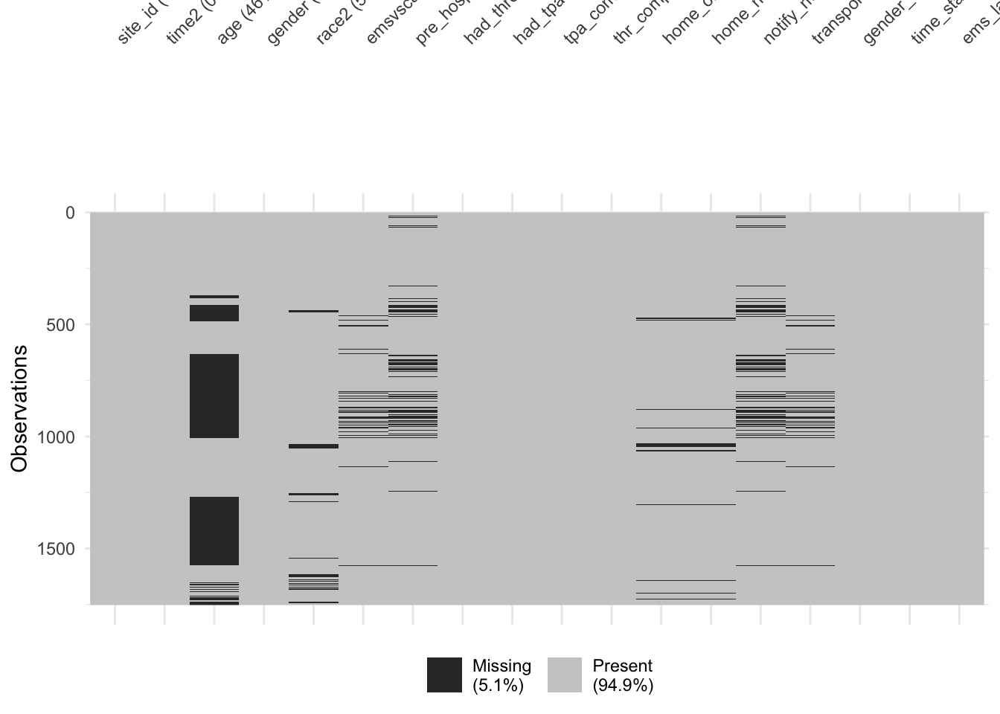
missingness by time stage
library(dplyr)
library(tidyr)
library(ggplot2)
x %>%
group_by(time_stage) %>%
summarise(across(everything(), ~ mean(is.na(.))), .groups = "drop") %>%
pivot_longer(
cols = -time_stage,
names_to = "variable",
values_to = "prop_missing"
) %>%
ggplot(aes(x = variable, y = time_stage, fill = prop_missing)) +
geom_tile(color = "white") +
scale_fill_viridis_c(
name = "Proportion\nMissing",
labels = scales::percent_format(accuracy = 1)
) +
labs(
title = "Missingness by Time Stage (Baseline / Mid / Final)",
x = "Variable",
y = "Time Stage"
) +
theme_minimal() +
theme(
axis.text.x = element_text(angle = 45, hjust = 1)
)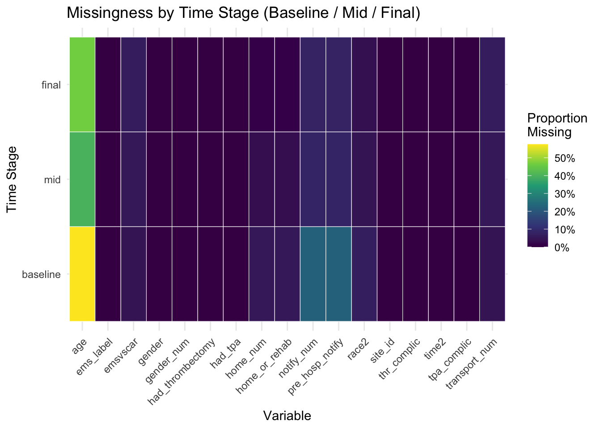
age missingness by site x quarter
x %>%
mutate(age_missing = is.na(age)) %>%
group_by(site_id, time2) %>%
summarise(prop_age_missing = mean(age_missing), .groups = "drop") %>%
ggplot(aes(x = time2, y = site_id, fill = prop_age_missing)) +
geom_tile(color = "white") +
scale_fill_viridis_c(labels = scales::percent_format(accuracy = 1)) +
labs(
title = "Share of Records Missing Age by Site and Quarter",
fill = "Percent\nMissing"
) +
theme(axis.text.x = element_text(angle = 45, hjust = 1))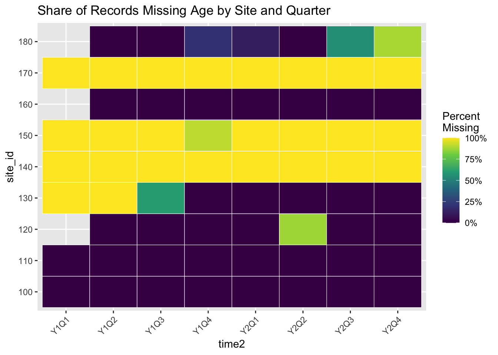
Can clearly see that this is not MCAR; its MAR.
Missing data + Frequentist model
use predictive mean matching by drawing 20 multiply imputed data sets
impute_vars <- x %>%
dplyr::select(
home_or_rehab, age, gender, race2, emsvscar, pre_hosp_notify,
had_tpa, had_thrombectomy, tpa_complic, thr_complic,
site_id, time2
)
meth <- make.method(impute_vars)
meth["age"] <- "pmm"
pred <- make.predictorMatrix(impute_vars)
pred["age", ] <- 0
pred["age", c("gender", "race2", "emsvscar", "pre_hosp_notify",
"had_tpa", "had_thrombectomy", "tpa_complic",
"thr_complic", "site_id", "time2", "home_or_rehab")] <- 1
set.seed(2025)
imp <- mice(
impute_vars,
m = 20,
maxit = 20,
method = meth,
predictorMatrix = pred,
seed = 2025,
printFlag = FALSE
)Warning: Number of logged events: 400impClass: mids
Number of multiple imputations: 20
Imputation methods:
home_or_rehab age gender race2
"logreg" "pmm" "" "polyreg"
emsvscar pre_hosp_notify had_tpa had_thrombectomy
"pmm" "logreg" "" ""
tpa_complic thr_complic site_id time2
"" "" "" ""
PredictorMatrix:
home_or_rehab age gender race2 emsvscar pre_hosp_notify had_tpa
home_or_rehab 0 1 1 1 1 1 1
age 1 0 1 1 1 1 1
gender 1 1 0 1 1 1 1
race2 1 1 1 0 1 1 1
emsvscar 1 1 1 1 0 1 1
pre_hosp_notify 1 1 1 1 1 0 1
had_thrombectomy tpa_complic thr_complic site_id time2
home_or_rehab 1 1 1 1 1
age 1 1 1 1 1
gender 1 1 1 1 1
race2 1 1 1 1 1
emsvscar 1 1 1 1 1
pre_hosp_notify 1 1 1 1 1
Number of logged events: 400
it im dep meth out
1 1 1 age pmm site_id140, site_id170
2 1 2 age pmm site_id140, site_id170
3 1 3 age pmm site_id140, site_id170
4 1 4 age pmm site_id140, site_id170
5 1 5 age pmm site_id140, site_id170
6 1 6 age pmm site_id140, site_id170constructs 20 predictive-mean-matching imputations for Age using the specified covariates
fit1_mi <- with(
imp,
glm(
home_or_rehab ~ age + gender + race2 + emsvscar + pre_hosp_notify +
had_tpa + had_thrombectomy + tpa_complic + thr_complic + time2,
family = binomial
)
)
pool(fit1_mi) %>% summary(conf.int = TRUE, exponentiate = TRUE) term estimate std.error statistic df
1 (Intercept) 665.6021918 0.828972065 7.841871222 55.38090
2 age 0.9397909 0.009416161 -6.594822268 33.64384
3 genderFemale 0.6596744 0.137053246 -3.035381699 278.92232
4 race2African American 0.5743311 0.166812718 -3.324381684 163.24787
5 race2Other 0.5963471 0.292048563 -1.770021875 385.86304
6 emsvscar 0.3590347 0.335293357 -3.055045204 426.01912
7 pre_hosp_notifyNo 0.9982560 0.223991143 -0.007792792 155.47690
8 had_tpaTRUE 1.6894133 0.181094345 2.895624952 427.31481
9 had_thrombectomyTRUE 0.5336110 0.179046244 -3.507966048 299.39652
10 tpa_complicTRUE 0.2577050 0.465811857 -2.910917627 88.56888
11 thr_complicTRUE 0.2511692 0.405044176 -3.411055878 828.20902
12 time2Y1Q2 1.0872388 0.291869328 0.286570992 272.66031
13 time2Y1Q3 1.2633451 0.291751829 0.801239312 547.29906
14 time2Y1Q4 1.1426728 0.289859436 0.460119952 378.26761
15 time2Y2Q1 1.1887924 0.289588505 0.597185303 403.81189
16 time2Y2Q2 1.5762660 0.315935102 1.440355089 255.47028
17 time2Y2Q3 1.4900642 0.293494284 1.358865278 521.62303
18 time2Y2Q4 1.3427948 0.294244330 1.001729204 461.49949
p.value 2.5 % 97.5 % conf.low conf.high
1 1.511333e-10 126.4253263 3504.2525955 126.4253263 3504.2525955
2 1.545034e-07 0.9219712 0.9579550 0.9219712 0.9579550
3 2.629180e-03 0.5036876 0.8639686 0.5036876 0.8639686
4 1.094195e-03 0.4131527 0.7983882 0.4131527 0.7983882
5 7.751313e-02 0.3358341 1.0589453 0.3358341 1.0589453
6 2.391604e-03 0.1857467 0.6939876 0.1857467 0.6939876
7 9.937923e-01 0.6413345 1.5538147 0.6413345 1.5538147
8 3.978177e-03 1.1834510 2.4116903 1.1834510 2.4116903
9 5.208227e-04 0.3751472 0.7590105 0.3751472 0.7590105
10 4.557820e-03 0.1021247 0.6503012 0.1021247 0.6503012
11 6.784539e-04 0.1134195 0.5562183 0.1134195 0.5562183
12 7.746585e-01 0.6120370 1.9314001 0.6120370 1.9314001
13 4.233408e-01 0.7122492 2.2408460 0.7122492 2.2408460
14 6.456945e-01 0.6462509 2.0204247 0.6462509 2.0204247
15 5.507184e-01 0.6727703 2.1006090 0.6727703 2.1006090
16 1.509913e-01 0.8461064 2.9365271 0.8461064 2.9365271
17 1.747766e-01 0.8371459 2.6522153 0.8371459 2.6522153
18 3.169993e-01 0.7531645 2.3940293 0.7531645 2.3940293fits the logistic model within each imputed dataset and pools odds ratios that respect imputation uncertainty. # Frequentist model diagnostics
- first imputed dataset
comp1 <- complete(imp, 1) # first imputed dataset
fit_fixed <- glm(
home_or_rehab ~ age + gender + race2 + emsvscar + pre_hosp_notify +
had_tpa + had_thrombectomy + tpa_complic + thr_complic + time2,
data = comp1,
family = binomial
)
comp1$pred <- predict(fit_fixed, type="response")library(lme4)Loading required package: Matrix
Attaching package: 'Matrix'The following objects are masked from 'package:tidyr':
expand, pack, unpack
Attaching package: 'lme4'The following object is masked from 'package:nlme':
lmListfit_mixed <- glmer(
home_or_rehab ~ age + gender + race2 + emsvscar + pre_hosp_notify +
had_tpa + had_thrombectomy + tpa_complic + thr_complic + time2 +
(1 | site_id),
data = comp1,
family = binomial
)Warning in checkConv(attr(opt, "derivs"), opt$par, ctrl = control$checkConv, :
Model failed to converge with max|grad| = 0.00789023 (tol = 0.002, component 1)Warning in checkConv(attr(opt, "derivs"), opt$par, ctrl = control$checkConv, : Model is nearly unidentifiable: very large eigenvalue
- Rescale variables?random effect for site id is extremely small (variance close to 0)
pearson_res <- residuals(fit_fixed, type = "pearson")
# Overdispersion ratio
overdisp_fixed <- sum(pearson_res^2) / df.residual(fit_fixed)
overdisp_fixed[1] 0.9939514pearson_res_mixed <- residuals(fit_mixed, type = "pearson")
overdisp_mixed <- sum(pearson_res_mixed^2) / df.residual(fit_mixed)
overdisp_mixed[1] 0.9831857≈ 1 → no overdispersion in both fixed & mixed model -> adding site effect doesnt reduce dispersion
- all imputed datasets
cal_list <- lapply(1:imp$m, function(k) {
dat_k <- complete(imp, k)
fit_k <- glm(
home_or_rehab ~ age + gender + race2 + emsvscar + pre_hosp_notify +
had_tpa + had_thrombectomy + tpa_complic + thr_complic + time2,
data = dat_k,
family = binomial
)
dat_k$pred <- predict(fit_k, type = "response")
dat_k %>%
mutate(
bin = ntile(pred, 10),
imp = k
) %>%
group_by(imp, bin) %>%
summarise(
mean_pred = mean(pred),
obs_rate = mean(home_or_rehab),
.groups = "drop"
)
})
cal_all <- bind_rows(cal_list)calibration plot
library(arm)Loading required package: MASS
Attaching package: 'MASS'The following object is masked from 'package:dplyr':
select
arm (Version 1.14-4, built: 2024-4-1)Working directory is /Users/anirudhjain/Documents/College/Semester 7/STA440L/Case Studies/Sta440_case5cal <- comp1 %>%
mutate(bin = ntile(pred, 10)) %>%
group_by(bin) %>%
summarise(
mean_pred = mean(pred),
obs_rate = mean(home_or_rehab)
)
ggplot(cal, aes(mean_pred, obs_rate)) +
geom_point(size=3) +
geom_abline(slope=1, intercept=0, linetype="dashed", color="red") +
labs(title="Calibration Plot",
x="Mean Predicted Probability",
y="Observed Proportion")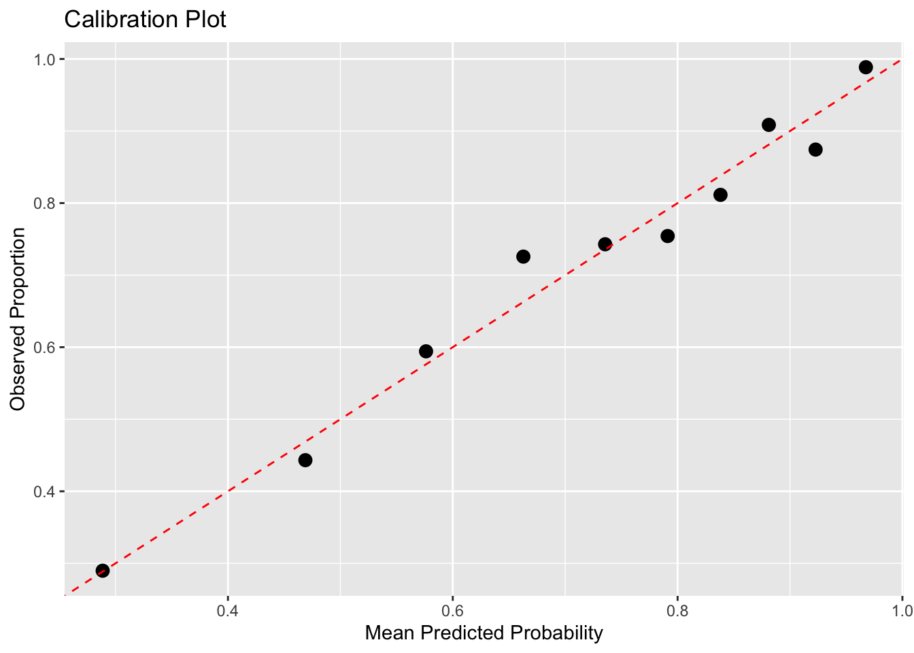
ggplot(cal_all, aes(x = mean_pred, y = obs_rate)) +
geom_point(size = 1.8) +
geom_abline(slope = 1, intercept = 0,
linetype = "dashed", color = "red") +
coord_equal(xlim = c(0,1), ylim = c(0,1)) +
facet_wrap(~ imp) +
labs(
title = "Calibration Plots Across Imputations",
x = "Mean Predicted Probability",
y = "Observed Proportion"
)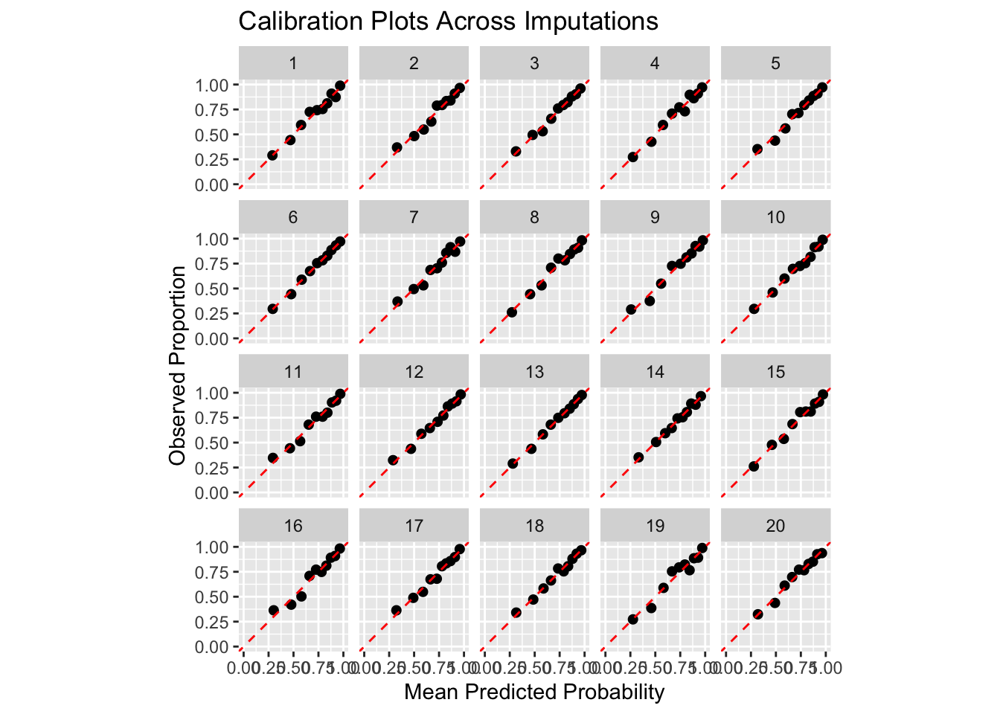
ROC curve
library(pROC)Type 'citation("pROC")' for a citation.
Attaching package: 'pROC'The following objects are masked from 'package:stats':
cov, smooth, varroc_obj <- roc(comp1$home_or_rehab, comp1$pred)Setting levels: control = 0, case = 1Setting direction: controls < casesauc_value <- auc(roc_obj)
plot(1 - roc_obj$specificities,
roc_obj$sensitivities,
type = "l",
col = "steelblue",
xlab = "1 – Specificity (False Positive Rate)",
ylab = "Sensitivity",
main = "ROC Curve")
abline(0, 1, lty = 2, col = "gray")
text(
x = 0.6, y = 0.1,
labels = paste("AUC =", round(auc_value, 3)),
cex = 1.3
)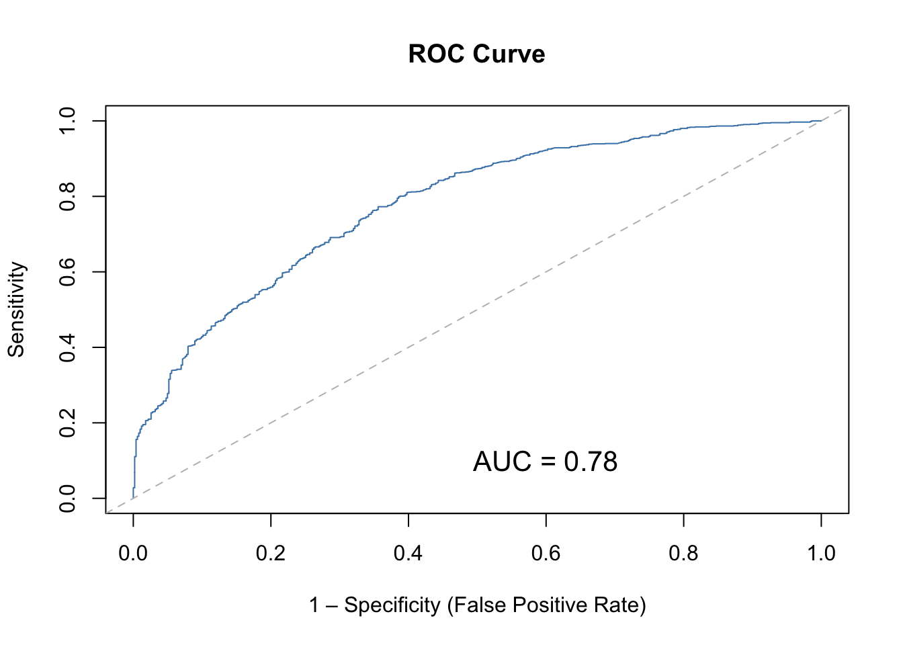
roc_list <- lapply(1:20, function(k) {
dat_k <- complete(imp, k)
fit_k <- glm(
home_or_rehab ~ age + gender + race2 + emsvscar + pre_hosp_notify +
had_tpa + had_thrombectomy + tpa_complic + thr_complic + time2,
data = dat_k,
family = binomial
)
pred_k <- predict(fit_k, type = "response")
roc(dat_k$home_or_rehab, pred_k)
})Setting levels: control = 0, case = 1Setting direction: controls < casesSetting levels: control = 0, case = 1Setting direction: controls < casesSetting levels: control = 0, case = 1Setting direction: controls < casesSetting levels: control = 0, case = 1Setting direction: controls < casesSetting levels: control = 0, case = 1Setting direction: controls < casesSetting levels: control = 0, case = 1Setting direction: controls < casesSetting levels: control = 0, case = 1Setting direction: controls < casesSetting levels: control = 0, case = 1Setting direction: controls < casesSetting levels: control = 0, case = 1Setting direction: controls < casesSetting levels: control = 0, case = 1Setting direction: controls < casesSetting levels: control = 0, case = 1Setting direction: controls < casesSetting levels: control = 0, case = 1Setting direction: controls < casesSetting levels: control = 0, case = 1Setting direction: controls < casesSetting levels: control = 0, case = 1Setting direction: controls < casesSetting levels: control = 0, case = 1Setting direction: controls < casesSetting levels: control = 0, case = 1Setting direction: controls < casesSetting levels: control = 0, case = 1Setting direction: controls < casesSetting levels: control = 0, case = 1Setting direction: controls < casesSetting levels: control = 0, case = 1Setting direction: controls < casesSetting levels: control = 0, case = 1Setting direction: controls < cases# Turn ROC curves into a data frame
roc_df <- lapply(seq_along(roc_list), function(k) {
data.frame(
imp = k,
fpr = 1 - roc_list[[k]]$specificities, # 1 - specificity
tpr = roc_list[[k]]$sensitivities # sensitivity
)
}) %>% bind_rows()
# AUC per imputation (for optional labels)
auc_values <- sapply(roc_list, auc)
auc_df <- data.frame(
imp = 1:20,
auc = auc_values
)
# Faceted ROC plots
ggplot(roc_df, aes(x = fpr, y = tpr)) +
geom_line(color = "steelblue") +
geom_abline(slope = 1, intercept = 0, linetype = "dashed", color = "gray") +
facet_wrap(~ imp) +
labs(
title = "ROC Curves Across Imputations",
x = "1 – Specificity (False Positive Rate)",
y = "Sensitivity"
) +
# Optional: add AUC text inside each facet
geom_text(
data = auc_df,
aes(x = 0.7, y = 0.1,
label = paste0("AUC = ", round(auc, 3))),
inherit.aes = FALSE,
size = 3
)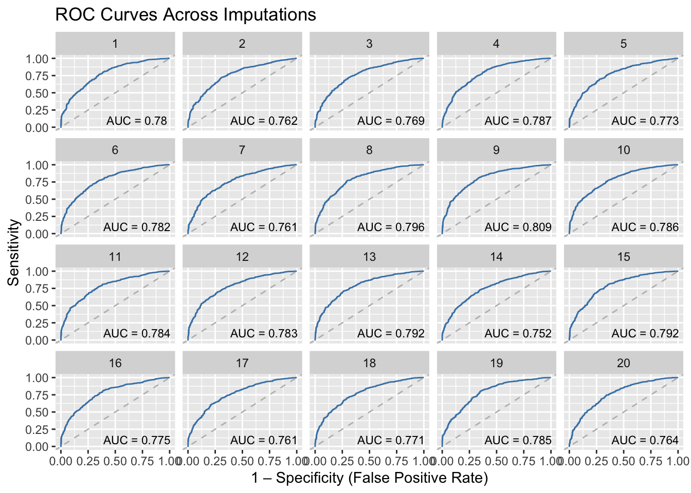
which variables were predictive of missingness
x$miss_age <- ifelse(is.na(x$age), 1, 0)
find_predictors_of_missingness <- function(var) {
# 1. Create missingness indicator
miss_indicator <- as.numeric(is.na(x[[var]]))
# 2. Build dataset with predictors (drop the variable being tested)
predictors <- x[, setdiff(names(x), var), drop = FALSE]
# 3. Combine into one dataframe
data_miss <- data.frame(miss = miss_indicator, predictors)
# 4. Fit logistic regression
fit <- glm(miss ~ ., data = data_miss, family = binomial)
return(summary(fit))
}
find_predictors_of_missingness("age")Warning: glm.fit: algorithm did not converge
Call:
glm(formula = miss ~ ., family = binomial, data = data_miss)
Coefficients: (7 not defined because of singularities)
Estimate Std. Error z value Pr(>|z|)
(Intercept) -2.657e+01 7.014e+04 0.000 1.000
site_id110 -1.701e-10 4.253e+04 0.000 1.000
site_id120 1.176e-09 5.123e+04 0.000 1.000
site_id130 5.301e-10 4.171e+04 0.000 1.000
site_id140 -4.783e-06 6.439e+04 0.000 1.000
site_id150 -1.573e-07 6.455e+04 0.000 1.000
site_id160 -5.940e-10 3.887e+04 0.000 1.000
site_id170 -1.829e-07 5.913e+04 0.000 1.000
site_id180 1.578e-09 4.321e+04 0.000 1.000
time2Y1Q2 -3.422e-10 4.507e+04 0.000 1.000
time2Y1Q3 7.611e-11 4.688e+04 0.000 1.000
time2Y1Q4 2.566e-09 4.585e+04 0.000 1.000
time2Y2Q1 3.653e-11 4.586e+04 0.000 1.000
time2Y2Q2 9.301e-11 4.640e+04 0.000 1.000
time2Y2Q3 3.515e-10 4.564e+04 0.000 1.000
time2Y2Q4 7.032e-11 4.689e+04 0.000 1.000
genderFemale -6.708e-11 1.942e+04 0.000 1.000
race2African American -9.161e-10 2.329e+04 0.000 1.000
race2Other -6.597e-10 4.024e+04 0.000 1.000
emsvscar 9.997e-10 3.972e+04 0.000 1.000
pre_hosp_notifyNo 5.551e-10 3.162e+04 0.000 1.000
had_thrombectomyTRUE -9.252e-10 2.510e+04 0.000 1.000
had_tpaTRUE -1.755e-10 2.863e+04 0.000 1.000
tpa_complicTRUE 1.281e-08 7.500e+04 0.000 1.000
thr_complicTRUE 5.298e-10 7.438e+04 0.000 1.000
home_or_rehabTRUE -2.500e-10 2.279e+04 0.000 1.000
home_num NA NA NA NA
notify_num NA NA NA NA
transport_num NA NA NA NA
gender_num NA NA NA NA
time_stagemid NA NA NA NA
time_stagefinal NA NA NA NA
ems_labelEMS Arrival NA NA NA NA
miss_age 5.313e+01 4.784e+04 0.001 0.999
(Dispersion parameter for binomial family taken to be 1)
Null deviance: 1.9065e+03 on 1396 degrees of freedom
Residual deviance: 8.1048e-09 on 1370 degrees of freedom
(355 observations deleted due to missingness)
AIC: 54
Number of Fisher Scoring iterations: 25indicates perfect separation (complete separation) missingness mechanism is
Not random. but structural, driven by site and quarter
Bayesian model
Reference patient
age_ref <- median(x$age, na.rm = TRUE)
gender_ref <- as.numeric(names(sort(table(x$gender_num), decreasing = TRUE))[1])
ems_ref <- as.numeric(names(sort(table(x$transport_num), decreasing = TRUE))[1])
age_ref[1] 70gender_ref[1] 0ems_ref[1] 1age = 70 gender = 0 (female) race = Caucasian EMS = 0, notify = 0 TPA = 0, thrombectomy = 0, no complications site effect = average = 0
model_string <- "
model {
################################################
# 0. OUTCOME MODEL: home_or_rehab
################################################
for (i in 1:N) {
# Binary outcome
home[i] ~ dbern(p[i])
# Logistic mixed model
logit(p[i]) <-
beta0 +
beta_age * age[i] +
beta_gender * gender[i] + # 0/1
beta_ems * transport[i] + # EMS vs car
beta_not * notify[i] + # pre-hosp notification
beta_tpa * had_tpa[i] +
beta_thr * had_thromb[i] +
beta_tpaC * tpa_comp[i] +
beta_thrC * thr_comp[i] +
beta_time[ time_stage[i] ] +
beta_race[race[i]] + # race coded 1..nRace
u_site_out[ site[i] ] # site random effect
}
# Priors for outcome fixed effects
beta0 ~ dnorm(0, 1.0E-4)
beta_age ~ dnorm(0, 1.0E-4)
beta_gender ~ dnorm(0, 1.0E-4)
beta_ems ~ dnorm(0, 1.0E-4)
beta_not ~ dnorm(0, 1.0E-4)
beta_tpa ~ dnorm(0, 1.0E-4)
beta_thr ~ dnorm(0, 1.0E-4)
beta_tpaC ~ dnorm(0, 1.0E-4)
beta_thrC ~ dnorm(0, 1.0E-4)
# Time (quarter) effects
beta_time[1] <- 0 # baseline = reference level
for (t in 2:nTimeStage) { # mid, final
beta_time[t] ~ dnorm(0, 1.0E-4)
}
# Race effects, first category as reference (Caucasian)
for (r in 2:nRace) {
beta_race[r] ~ dnorm(0, 1.0E-4)
}
beta_race[1] <- 0
# Site random intercepts for outcome
for (s in 1:nSite) {
u_site_out[s] ~ dnorm(0, tau_site_out)
}
tau_site_out <- pow(sigma_site_out, -2)
sigma_site_out ~ dunif(0, 2)
################################################
# 1. AGE MODEL: age | transport, notify, site, time, gender
# (p(age | transport, notify, z))
################################################
for (i in 1:N) {
age[i] ~ dnorm(mu_age[i], tau_age)
mu_age[i] <-
alpha0 +
alpha_time[ time_stage[i] ] +
alpha_gender * gender[i] +
alpha_tr * transport[i] + # allow EMS to shift age mix
alpha_not * notify[i] + # allow notification to shift age mix
u_site_age[ site[i] ] # site random effect
}
alpha0 ~ dnorm(0, 1.0E-4)
alpha_gender ~ dnorm(0, 1.0E-4)
alpha_tr ~ dnorm(0, 1.0E-4)
alpha_not ~ dnorm(0, 1.0E-4)
for (t in 1:nTimeStage) {
alpha_time[t] ~ dnorm(0, 1.0E-4)
}
for (s in 1:nSite) {
u_site_age[s] ~ dnorm(0, tau_site_age)
}
tau_age <- pow(sigma_age, -2)
sigma_age ~ dunif(0, 50) # age in years
tau_site_age <- pow(sigma_site_age, -2)
sigma_site_age ~ dunif(0, 20)
################################################
# 2. NOTIFY MODEL: notify | transport, site, time, gender
# (p(notify | transport, z))
################################################
for (i in 1:N) {
# notify is only meaningful if transport == 1 (EMS).
# If transport[i] = 0, then pi_not[i] ≈ 0, so notify[i] ≈ 0.
notify[i] ~ dbern(pi_not[i])
pi_not[i] <- transport[i] * pi_ems[i] + (1 - transport[i]) * 1.0E-6
logit(pi_ems[i]) <-
delta0 +
delta_time[ time_stage[i] ] +
delta_gender * gender[i] +
u_site_not[ site[i] ]
}
delta0 ~ dnorm(0, 1.0E-4)
delta_gender ~ dnorm(0, 1.0E-4)
for (t in 1:nTimeStage) {
delta_time[t] ~ dnorm(0, 1.0E-4)
}
for (s in 1:nSite) {
u_site_not[s] ~ dnorm(0, tau_site_not)
}
tau_site_not <- pow(sigma_site_not, -2)
sigma_site_not ~ dunif(0, 2)
################################################
# 3. TRANSPORT MODEL: transport | site, time, gender
# (p(transport | z))
################################################
for (i in 1:N) {
transport[i] ~ dbern(pi_tr[i])
logit(pi_tr[i]) <-
gamma0 +
gamma_time[ time_stage[i] ] +
gamma_gender * gender[i] +
u_site_tr[ site[i] ]
}
gamma0 ~ dnorm(0, 1.0E-4)
gamma_gender ~ dnorm(0, 1.0E-4)
for (t in 1:nTimeStage) {
gamma_time[t] ~ dnorm(0, 1.0E-4)
}
for (s in 1:nSite) {
u_site_tr[s] ~ dnorm(0, tau_site_tr)
}
tau_site_tr <- pow(sigma_site_tr, -2)
sigma_site_tr ~ dunif(0, 2)
################################################
# 4. RACE MODEL: race | site (LAST in ordering)
################################################
for (i in 1:N) {
race[i] ~ dcat(pi_race[ site[i], 1:nRace ])
}
for (s in 1:nSite) {
pi_race[s, 1:nRace] ~ ddirch(alpha[])
}
################################################
# 5. DERIVED QUANTITIES: baseline vs final stages
################################################
beta_time_baseline <- beta_time[ baseline_stage ]
beta_time_final <- beta_time[ final_stage ]
# Overall program effect on log-odds and OR
time_effect <- beta_time_final - beta_time_baseline
OR_time <- exp(time_effect)
# Reference patient settings:
# age_ref = 70, gender = 0, race = reference (nRace),
# no EMS, no notify, no TPA/thrombectomy/complications,
# and average site random effect (0).
age_ref <- 70
logit_p_baseline <-
beta0 +
beta_age * age_ref +
beta_gender * 0 +
beta_ems * 0 +
beta_not * 0 +
beta_tpa * 0 +
beta_thr * 0 +
beta_tpaC * 0 +
beta_thrC * 0 +
beta_time_baseline +
beta_race[nRace] + # = 0
0 # average u_site_out
logit_p_final <-
beta0 +
beta_age * age_ref +
beta_gender * 0 +
beta_ems * 0 +
beta_not * 0 +
beta_tpa * 0 +
beta_thr * 0 +
beta_tpaC * 0 +
beta_thrC * 0 +
beta_time_final +
beta_race[nRace] +
0
p_baseline <- exp(logit_p_baseline) / (1 + exp(logit_p_baseline))
p_final <- exp(logit_p_final) / (1 + exp(logit_p_final))
improvement <- p_final - p_baseline
}
"baseline_stage <- which(levels(x$time_stage) == "baseline")
final_stage <- which(levels(x$time_stage) == "final")
data_list <- list(
N = nrow(x),
nSite = nlevels(x$site_id),
nTimeStage = nlevels(x$time_stage),
nRace = nlevels(x$race2),
home = x$home_num, # 0/1
age = x$age, # numeric, NA allowed
notify = x$notify_num, # 0/1, NA allowed
transport = x$transport_num, # 0/1, NA allowed
had_tpa = as.integer(x$had_tpa),
had_thromb= as.integer(x$had_thrombectomy),
tpa_comp = as.integer(x$tpa_complic),
thr_comp = as.integer(x$thr_complic),
gender = x$gender_num, # 0/1
race = as.integer(x$race2), # 1..nRace, NA allowed
site = as.integer(x$site_id), # 1..nSite
time_stage = as.integer(x$time_stage), # 1..nTimeStage
alpha = rep(0.5, nlevels(x$race2)), # Jeffreys prior for race
baseline_stage = baseline_stage,
final_stage = final_stage
)library(rjags)Loading required package: coda
Attaching package: 'coda'The following object is masked from 'package:arm':
traceplotLinked to JAGS 4.3.2Loaded modules: basemod,bugsresults_dir <- "results"
samples_path <- file.path(results_dir, "posterior_samples_jags.rds")
summary_path <- file.path(results_dir, "posterior_summary.rds")
stats_path <- file.path(results_dir, "posterior_statistics.csv")
if (!dir.exists(results_dir)) {
dir.create(results_dir, recursive = TRUE)
}
if (file.exists(samples_path) && file.exists(summary_path)) {
posterior_samples <- readRDS(samples_path)
posterior_summary <- readRDS(summary_path)
} else {
jmod <- jags.model(
textConnection(model_string),
data = data_list,
n.chains = 3
)
update(jmod, 2000)
params_of_interest <- c(
"beta0", "beta_age", "beta_gender", "beta_ems", "beta_not",
"beta_tpa", "beta_thr", "beta_tpaC", "beta_thrC",
"beta_time", "beta_race",
"sigma_site_out", "sigma_age", "sigma_site_age",
"sigma_site_not", "sigma_site_tr"
)
posterior_samples <- coda.samples(
jmod,
variable.names = params_of_interest,
n.iter = 8000
)
posterior_summary <- summary(posterior_samples)
saveRDS(posterior_samples, samples_path)
saveRDS(posterior_summary, summary_path)
write.csv(
posterior_summary$statistics,
stats_path,
row.names = TRUE
)
}
posterior_summary
Iterations = 3001:11000
Thinning interval = 1
Number of chains = 3
Sample size per chain = 8000
1. Empirical mean and standard deviation for each variable,
plus standard error of the mean:
Mean SD Naive SE Time-series SE
beta0 6.52405 0.595041 3.841e-03 0.0590078
beta_age -0.06355 0.006586 4.251e-05 0.0005395
beta_ems -1.03885 0.331287 2.138e-03 0.0176562
beta_gender -0.39185 0.130977 8.455e-04 0.0020042
beta_not -0.02121 0.214087 1.382e-03 0.0068704
beta_race[1] 0.00000 0.000000 0.000e+00 0.0000000
beta_race[2] -0.40698 0.154776 9.991e-04 0.0023486
beta_race[3] -0.37773 0.289808 1.871e-03 0.0036239
beta_thr -0.55167 0.164571 1.062e-03 0.0045981
beta_thrC -1.49977 0.413839 2.671e-03 0.0040390
beta_time[1] 0.00000 0.000000 0.000e+00 0.0000000
beta_time[2] 0.18724 0.164129 1.059e-03 0.0034822
beta_time[3] 0.27450 0.190961 1.233e-03 0.0038448
beta_tpa 0.59879 0.170700 1.102e-03 0.0048564
beta_tpaC -1.42800 0.394275 2.545e-03 0.0044394
sigma_age 14.41652 0.335241 2.164e-03 0.0047385
sigma_site_age 2.55989 1.095630 7.072e-03 0.0234976
sigma_site_not 1.43867 0.307848 1.987e-03 0.0042096
sigma_site_out 0.18966 0.120451 7.775e-04 0.0034977
sigma_site_tr 0.42839 0.186333 1.203e-03 0.0036825
2. Quantiles for each variable:
2.5% 25% 50% 75% 97.5%
beta0 5.45150 6.09692 6.51143 6.91828 7.7349
beta_age -0.07745 -0.06775 -0.06345 -0.05883 -0.0516
beta_ems -1.71980 -1.25242 -1.02919 -0.81216 -0.4214
beta_gender -0.64912 -0.48006 -0.39164 -0.30395 -0.1386
beta_not -0.44820 -0.16515 -0.01985 0.12276 0.3919
beta_race[1] 0.00000 0.00000 0.00000 0.00000 0.0000
beta_race[2] -0.71111 -0.51198 -0.40613 -0.30359 -0.1045
beta_race[3] -0.94215 -0.57399 -0.38149 -0.18515 0.1889
beta_thr -0.87476 -0.66272 -0.55177 -0.44145 -0.2270
beta_thrC -2.33010 -1.77012 -1.49359 -1.21683 -0.7087
beta_time[1] 0.00000 0.00000 0.00000 0.00000 0.0000
beta_time[2] -0.13692 0.07709 0.18900 0.29675 0.5117
beta_time[3] -0.10026 0.14650 0.27477 0.40208 0.6517
beta_tpa 0.27158 0.48266 0.59731 0.71498 0.9366
beta_tpaC -2.21082 -1.69371 -1.42897 -1.16099 -0.6594
sigma_age 13.77888 14.18419 14.40891 14.63896 15.0960
sigma_site_age 1.07283 1.81095 2.35488 3.07039 5.2368
sigma_site_not 0.85174 1.20498 1.44190 1.68724 1.9612
sigma_site_out 0.01756 0.10506 0.17277 0.25067 0.4755
sigma_site_tr 0.15336 0.30060 0.39902 0.52195 0.8739Trace plots
old_par <- par(no.readonly = TRUE)
par(mfrow = c(2, 2), mar = c(3, 3, 2, 1))
plot(posterior_samples[, c("beta0", "beta_age", "beta_tpa", "beta_thr")])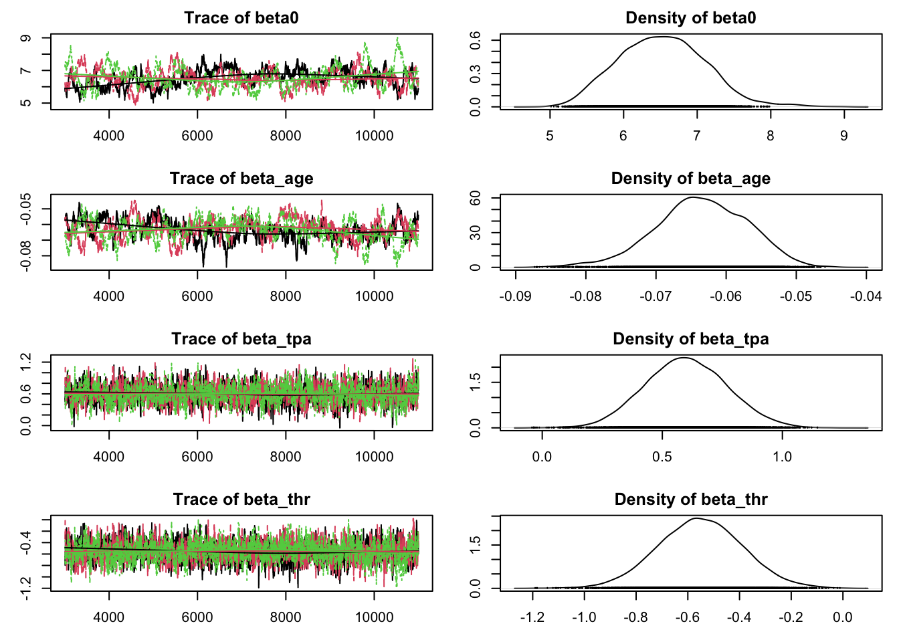
par(old_par)Need to look into the mixing for beta0 and beta_age.
Gelman-Rubin Diagnostic
gelman_diag <- gelman.diag(posterior_samples, multivariate = FALSE)
gelman_diagPotential scale reduction factors:
Point est. Upper C.I.
beta0 1.06 1.17
beta_age 1.06 1.19
beta_ems 1.01 1.02
beta_gender 1.00 1.00
beta_not 1.01 1.04
beta_race[1] NaN NaN
beta_race[2] 1.00 1.01
beta_race[3] 1.00 1.00
beta_thr 1.01 1.02
beta_thrC 1.00 1.00
beta_time[1] NaN NaN
beta_time[2] 1.00 1.01
beta_time[3] 1.00 1.01
beta_tpa 1.00 1.00
beta_tpaC 1.00 1.00
sigma_age 1.00 1.00
sigma_site_age 1.00 1.01
sigma_site_not 1.00 1.01
sigma_site_out 1.01 1.01
sigma_site_tr 1.00 1.01Most potential scale-reduction factors are near 1, so indicates that the three chains mixed well.
Effective Size Results
ess_values <- effectiveSize(posterior_samples)
ess_values beta0 beta_age beta_ems beta_gender beta_not
106.3609 152.6666 350.9438 4272.0414 962.3331
beta_race[1] beta_race[2] beta_race[3] beta_thr beta_thrC
0.0000 4487.2415 6520.6005 1336.4403 10551.4197
beta_time[1] beta_time[2] beta_time[3] beta_tpa beta_tpaC
0.0000 2254.6390 2484.7924 1245.2473 8009.2716
sigma_age sigma_site_age sigma_site_not sigma_site_out sigma_site_tr
5031.5575 2253.9225 5681.3536 1178.8628 2582.6084 Posterior Results
posterior_stats <- posterior_summary$statistics %>%
as.data.frame() %>%
tibble::rownames_to_column("parameter")
posterior_quants <- posterior_summary$quantiles %>%
as.data.frame() %>%
tibble::rownames_to_column("parameter")
posterior_table <- posterior_stats %>%
dplyr::select(parameter, Mean, SD) %>%
left_join(
posterior_quants %>%
dplyr::select(parameter, `2.5%`, `50%`, `97.5%`),
by = "parameter"
) %>%
filter(
stringr::str_detect(
parameter,
"^(beta_(age|tpa|thr|ems|not|time|race)|sigma_site_out)"
)
)
posterior_table %>%
arrange(parameter) %>%
knitr::kable(digits = 3, caption = "Posterior means and 95% credible intervals.")| parameter | Mean | SD | 2.5% | 50% | 97.5% |
|---|---|---|---|---|---|
| beta_age | -0.064 | 0.007 | -0.077 | -0.063 | -0.052 |
| beta_ems | -1.039 | 0.331 | -1.720 | -1.029 | -0.421 |
| beta_not | -0.021 | 0.214 | -0.448 | -0.020 | 0.392 |
| beta_race[1] | 0.000 | 0.000 | 0.000 | 0.000 | 0.000 |
| beta_race[2] | -0.407 | 0.155 | -0.711 | -0.406 | -0.104 |
| beta_race[3] | -0.378 | 0.290 | -0.942 | -0.381 | 0.189 |
| beta_thr | -0.552 | 0.165 | -0.875 | -0.552 | -0.227 |
| beta_thrC | -1.500 | 0.414 | -2.330 | -1.494 | -0.709 |
| beta_time[1] | 0.000 | 0.000 | 0.000 | 0.000 | 0.000 |
| beta_time[2] | 0.187 | 0.164 | -0.137 | 0.189 | 0.512 |
| beta_time[3] | 0.274 | 0.191 | -0.100 | 0.275 | 0.652 |
| beta_tpa | 0.599 | 0.171 | 0.272 | 0.597 | 0.937 |
| beta_tpaC | -1.428 | 0.394 | -2.211 | -1.429 | -0.659 |
| sigma_site_out | 0.190 | 0.120 | 0.018 | 0.173 | 0.476 |
posterior_table %>%
filter(stringr::str_detect(parameter, "^beta")) %>%
mutate(
OR_mean = exp(Mean),
OR_low = exp(`2.5%`),
OR_high = exp(`97.5%`)
) %>%
dplyr::select(parameter, OR_mean, OR_low, OR_high) %>%
arrange(parameter) %>%
knitr::kable(digits = 3, caption = "Posterior odds ratios for key covariates.")| parameter | OR_mean | OR_low | OR_high |
|---|---|---|---|
| beta_age | 0.938 | 0.925 | 0.950 |
| beta_ems | 0.354 | 0.179 | 0.656 |
| beta_not | 0.979 | 0.639 | 1.480 |
| beta_race[1] | 1.000 | 1.000 | 1.000 |
| beta_race[2] | 0.666 | 0.491 | 0.901 |
| beta_race[3] | 0.685 | 0.390 | 1.208 |
| beta_thr | 0.576 | 0.417 | 0.797 |
| beta_thrC | 0.223 | 0.097 | 0.492 |
| beta_time[1] | 1.000 | 1.000 | 1.000 |
| beta_time[2] | 1.206 | 0.872 | 1.668 |
| beta_time[3] | 1.316 | 0.905 | 1.919 |
| beta_tpa | 1.820 | 1.312 | 2.551 |
| beta_tpaC | 0.240 | 0.110 | 0.517 |